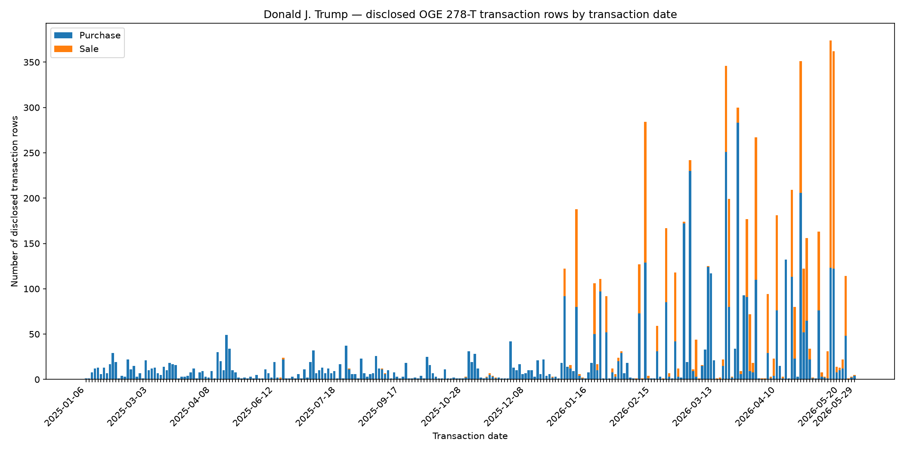

Trump OGE 278-T daily disclosed transaction rows
This chart counts disclosed transaction rows by transaction date from Open Cabinet's derived parser output. It is not an OGE-published aggregate and does not establish who personally placed an order.

Download CSV · Summary / provenance
Derived source: Open Cabinet static JSON
Primary definition: U.S. Office of Government Ethics — OGE Form 278-T · Definitions